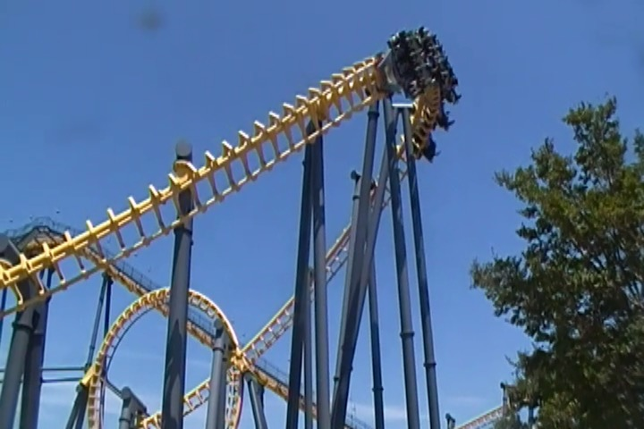
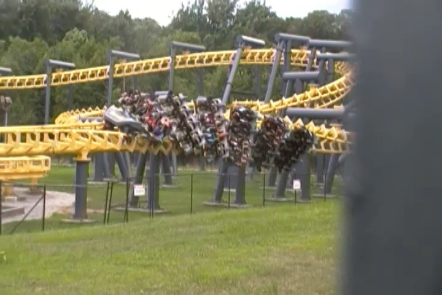
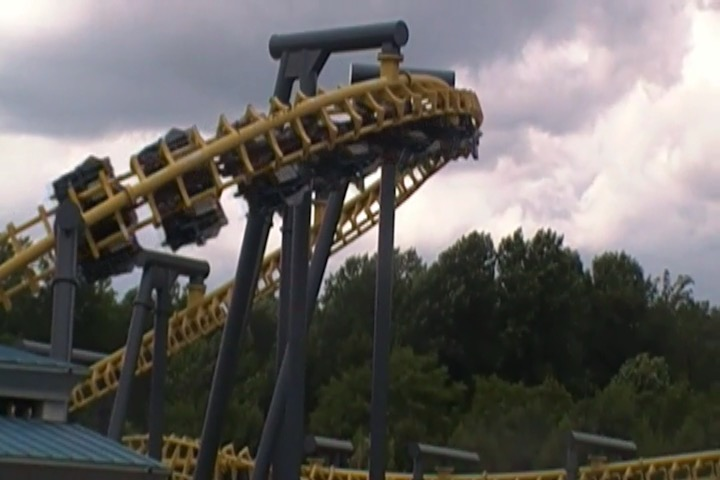
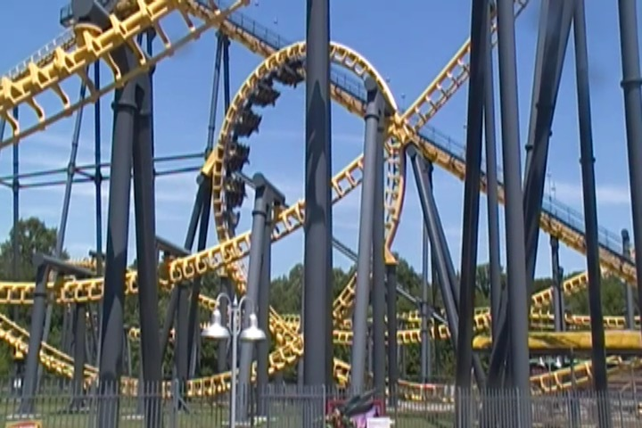
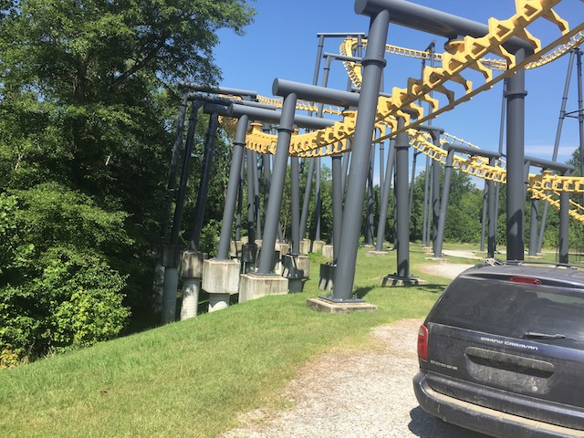
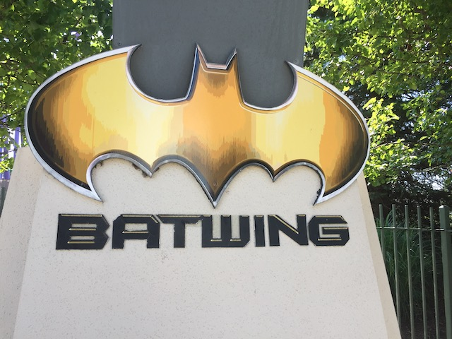
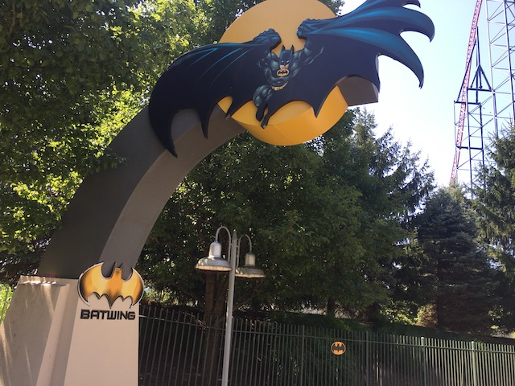

| |

Batwing Review

For today's review, we're gonna have to travel back in time to when Six Flags America still existed, so we can review Batwing. This was the parks Vekoma Flyer, and despite people bitching about it, this ride was really fun and I'm very sad that it's gone. Once you strapped yourself in, the ride went into flying position, and away we went! You roll around a turn and then begin to climb the lifthill. Now during that turn, I would warn you. The sun would've shined directly in your face and it freaking blinded you. But luckily, once you reached the lifthill, everything was all good from there. Since you were climbing up the lifthill backwards, you couldn't see when you reach the top, which increased the levels of excitement you experienced on the ride. Then suddenly, you started to level out and just saw the sky, this means you were going backwards again. But you shouldn't have worried about that. Then you simply just flipped over, and were going forewards again. Now, we reached the B&M Flyer position. Then you moved onto the first drop. The first drop was really good. It really made it look like we were diving straight towards the ground. It also provided us with plenty of speed. Then we headed straight into an overbanked turn. This was a really fun part of the ride and did make it seem like you were flying. Too bad your view sucked, but oh well. Still flying low to the ground, we then headed straight into a big turn. So far, it was just a normal turn, but suddenly, we noticed something weird. We were on our backs going backwards again. Yep. There was a half inline twist in this turn. So that provided us with some fun. Anyways, you then headed down into one of the best parts of the ride. The loop. Now while I will admit that I prefer Pretzal Loops to regular vertical loops on flying coasters, that real loops still kick ass and provide a different feel on a flying coaster than on a normal coaster. It sort of just has a weird feel to it that rocks. Anyways, we then headed into another turnaround that flipped us back on our stomachs facing foreward. We then headed back towards the ground with plenty of speed. This just lead us to another turnaround that while didn't flip us, was still very fun. But don't worry about the lack of flipping, for before you knew it, it was off into a double inline twist for you! This as always, was lots of fun because inline twists are fun that way. After that bit of excitement, we just headed straight into a downward helix. Now this certainly wasn't an intense fake helix of death, but it was still fun, and actually kind of relaxing. Nothing special, just a fun helix. But unfortunetly, after that, we then had to flip back on our backs and head into the brakes. So just how was Batwing? Well despite many people bitching and complaining about the Vekoma Flyers, I really liked them. Unfortunetly, for a brief moment of time, Batwing was the last Vekoma Flying Dutchman. So the significane of this ride was GREATLY elevated with the deaths of Firehawk and Nighthawk. But sadly, soon after, Batwing too, fell. Not only due to the fact that Six Flags America as a whole flat out closed. But even putting that aside, Batwing actually closed a couple months early since the ride really seemed suicidal and hellbent on closing early (a goal it sadly achieved, closing a couple months before Six Flags America). And with that, there are officially no more Vekoma Flyers. Which is really a shame as the entire ride genre was underrated. I know that there are still some great B&M Flyers out there, and hey. There is one Chinese Knock-Off Vekoma Flyer that still currently exists (that, plus a couple other fun coasters, actually puts that park as a priority during a future China Trip). So there's that at least. Regardless, Batwing, and all the Vekoma Flyers will be sadly missed.
8/10
Location: Six Flags America
Opened: 2001
Died: 2025
Built by: Vekoma
Last Ridden: July 22, 2019
I have ridden this exact same ride at the following parks.
Kings Island
Batwing Photos






Home
|